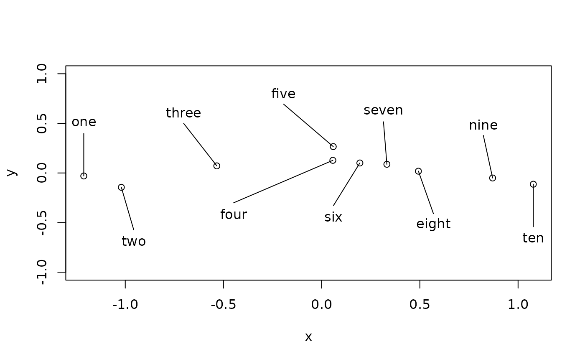
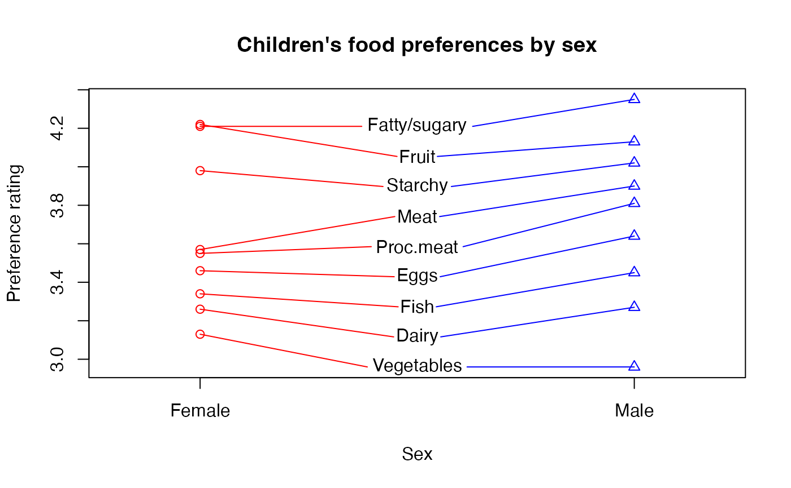

Spread labels for irregularly spaced values
spread.labels.RdPlaces labels for irregularly spaced values in a regular staggered order
Usage
spread.labels(x,y,labels=NULL,ony=NA,offsets=NA,between=FALSE,
linecol=par("fg"),srt=0,...)Arguments
- x,y
x and y data values
- labels
text strings
- ony
Whether to force the labels to be spread horizontally (FALSE) or vertically (TRUE). Defaults to whichever way the points are most spread out.
- offsets
How far away from the data points to place the labels. Defaults to one quarter of the plot span for all, staggered on each side.
- between
Whether to place the labels between two sets of points.
- linecol
Optional colors for the lines drawn to the points.
- srt
Rotation of the labels in degrees.
- ...
additional arguments passed to text.
Details
This function is mainly useful when labeling irregularly spaced data points that are "spread out" along one dimension. It places the labels regularly spaced and staggered on the long dimension of the data, drawing lines from each label to the point it describes.
If between is TRUE, the function expects two points for each label and will attempt to place the labels between two vertical lines of points. Lines will be drawn from the ends of each label to the two corresponding points.
If spreading labels horizontally, the user may wish to rotate the labels by 90 degrees (srt=90). If long labels run off the edge of the plot, increase the xlim for extra room.
References
Cooke, L.J. & Wardle, J. (2005) Age and gender differences in children's food preferences. British Journal of Nutrition, 93: 741-746.
Examples
# spread labels out in the x dimension using defaults
x<-sort(rnorm(10))
y<-rnorm(10)/10
plot(x,y,ylim=c(-1,1),type="p")
nums<-c("one","two","three","four","five","six","seven","eight","nine","ten")
spread.labels(x,y,nums)

# food preferences of children by sex (Cooke & Wardle, 2005)
fpkids<-data.frame(Food=c("Fatty/sugary","Fruit","Starchy","Meat",
"Proc.meat","Eggs","Fish","Dairy","Vegetables"),
Female=c(4.21,4.22,3.98,3.57,3.55,3.46,3.34,3.26,3.13),
Male=c(4.35,4.13,4.02,3.9,3.81,3.64,3.45,3.27,2.96))
plot(rep(1,9),fpkids$Female,xlim=c(0.8,2.2),
ylim=range(c(fpkids$Female,fpkids$Male)),xlab="Sex",xaxt="n",
ylab="Preference rating",main="Children's food preferences by sex",
col="red")
axis(1,at=1:2,labels=c("Female","Male"))
points(rep(2,9),fpkids$Male,col="blue",pch=2)
spread.labels(rep(1:2,each=9),c(fpkids$Female,fpkids$Male),
fpkids$Food,between=TRUE,linecol=c("red","blue"))
